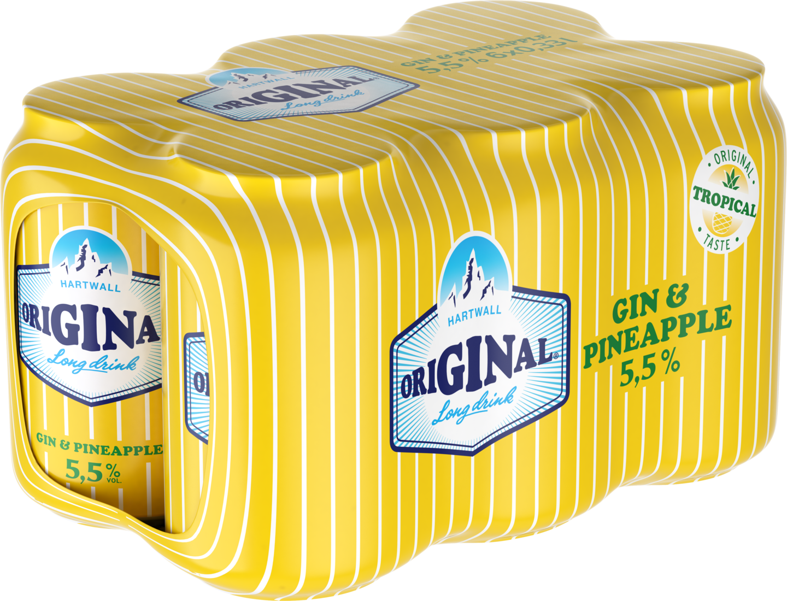
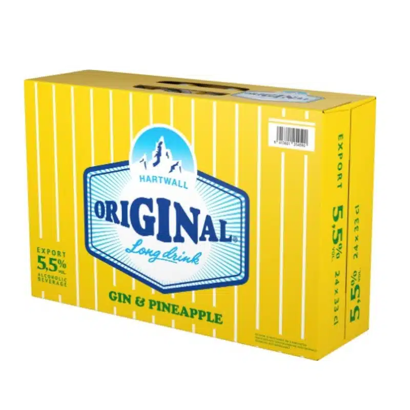

Ananas lonkerot ovat iso osa suomalaisen miehen ja ehkä jopa naistenkin elämää.

Kuvassa normaali 0,33CL lonkero.
Kuvassa sixpack.
Kuvassa lava.
Lisätietoa harrastuksestani voit löytää täältä.
Ananas lonkeroita myydään erillaisissa muodoissa, esim lasissa, ja tölkissä. Kaupasta löytää useimmiten sixpack, lasipullo, 0,33l ja 0,5l kokoja tästä rakkaasta tuotteesta. täällä.